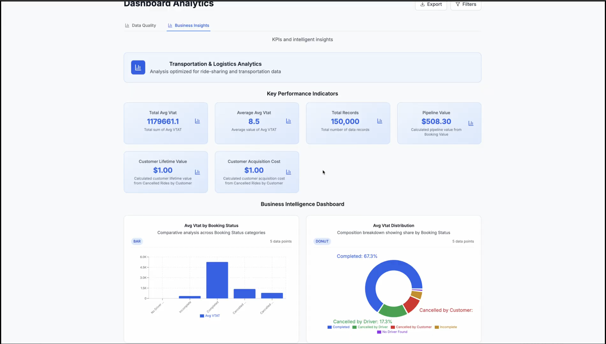

← Back
AutomatedBI: AI-Powered Business Intelligence Dashboard Generator
A multi-agent pipeline (read input → reason with specialist agents → produce a result) that transforms raw data into interactive dashboards. Four CrewAI agents, no manual configuration, and around 80% less manual reporting time in testing.
CrewAI
Gemini AI
Flask
React
PostgreSQL
Docker
Python 61% / JS 37%

80%
Reduction in manual reporting time
50MB
Max file size supported
4
Specialized CrewAI agents
6+
Business domains recognized
What It Does
AutomatedBI is an end-to-end platform that takes any CSV or Excel file as input and produces a
ready-to-present, interactive business intelligence dashboard: with zero manual configuration.
It automatically detects the business domain of your data (sales, finance, logistics, HR, etc.),
selects the most appropriate KPIs, and designs optimal visualizations using AI agents.
The platform produces two distinct dashboard modes:
- ML Engineering Dashboard: data quality scores, missing value analysis, ML readiness rating, preprocessing recommendations, and feature engineering suggestions for data scientists.
- Business Insights Dashboard: domain-specific KPIs, AI-generated natural language insights, interactive charts (bar, donut, scatter, treemap, gauge), and export capabilities for business stakeholders.
Architecture
Frontend (React + Tailwind) Backend (Flask) AI Layer (CrewAI + Gemini)
├── Upload Interface → ├── File Processing → ├── Data Quality Agent
├── Progress Tracking → ├── API Endpoints → ├── Domain Expert Agent
├── Dashboard Display → ├── Database Layer → ├── KPI Strategist Agent
└── Export Features → └── Background Tasks → └── Dashboard Designer Agent
PostgreSQL (JSONB) + Redis + Docker Compose
How It Was Built
Multi-Agent Pipeline
Four specialized CrewAI agents collaborate: one profiles data quality, one classifies the business domain, one selects KPIs, and one designs the visualization layout.
Real-Time Progress Tracking
WebSocket-like server-sent events stream processing stages to the frontend: Upload → Quality Analysis → Domain Classification → KPI Selection → Dashboard Design → Complete.
Flexible Storage
PostgreSQL with JSONB columns stores datasets and analysis results flexibly. Automatic cleanup of datasets older than 30 days. Redis for background task queueing.
Dockerized Deployment
Full Docker Compose setup with separate containers for frontend, backend, PostgreSQL, and Redis. One command to launch the entire stack.
Tech Stack
- AI: CrewAI multi-agent framework, Google Gemini AI (domain detection, insight generation)
- Backend: Python 3.11, Flask, SQLAlchemy, Pandas, Numpy
- Frontend: React 18, Tailwind CSS (mobile-first responsive design)
- Database: PostgreSQL (JSONB), Redis
- DevOps: Docker, Docker Compose, GitHub Actions CI